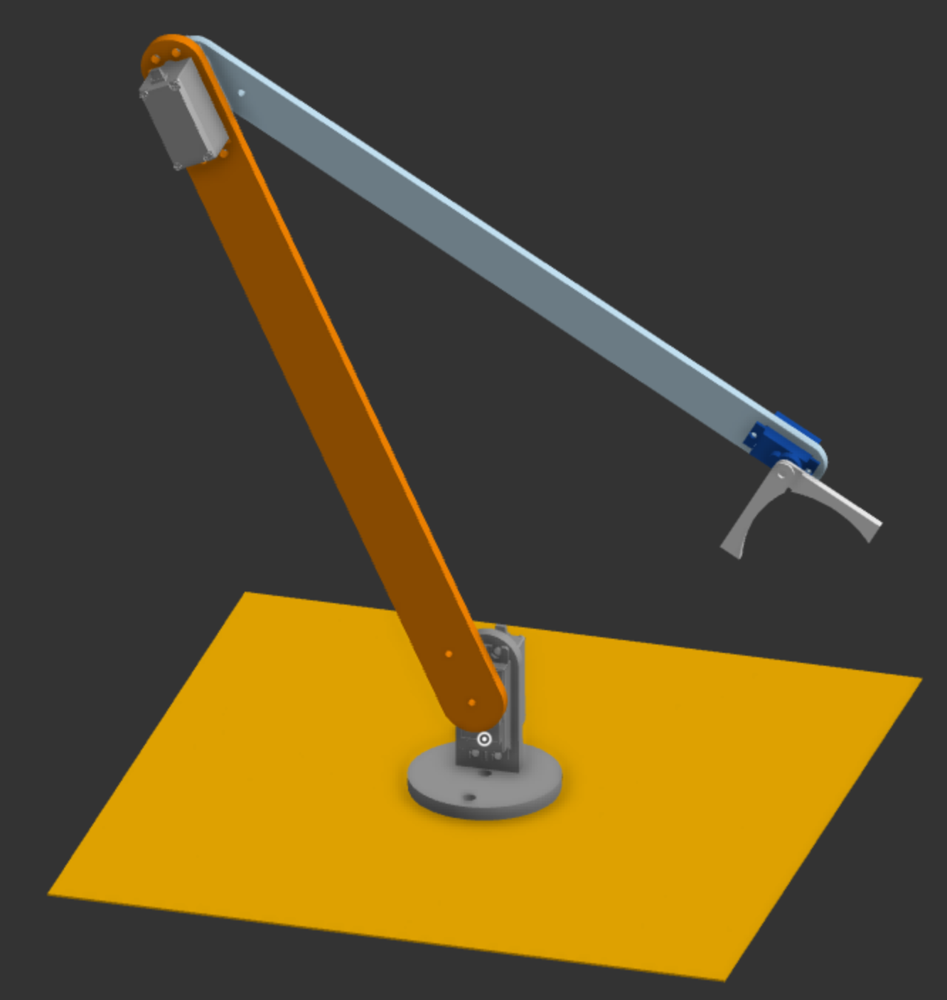
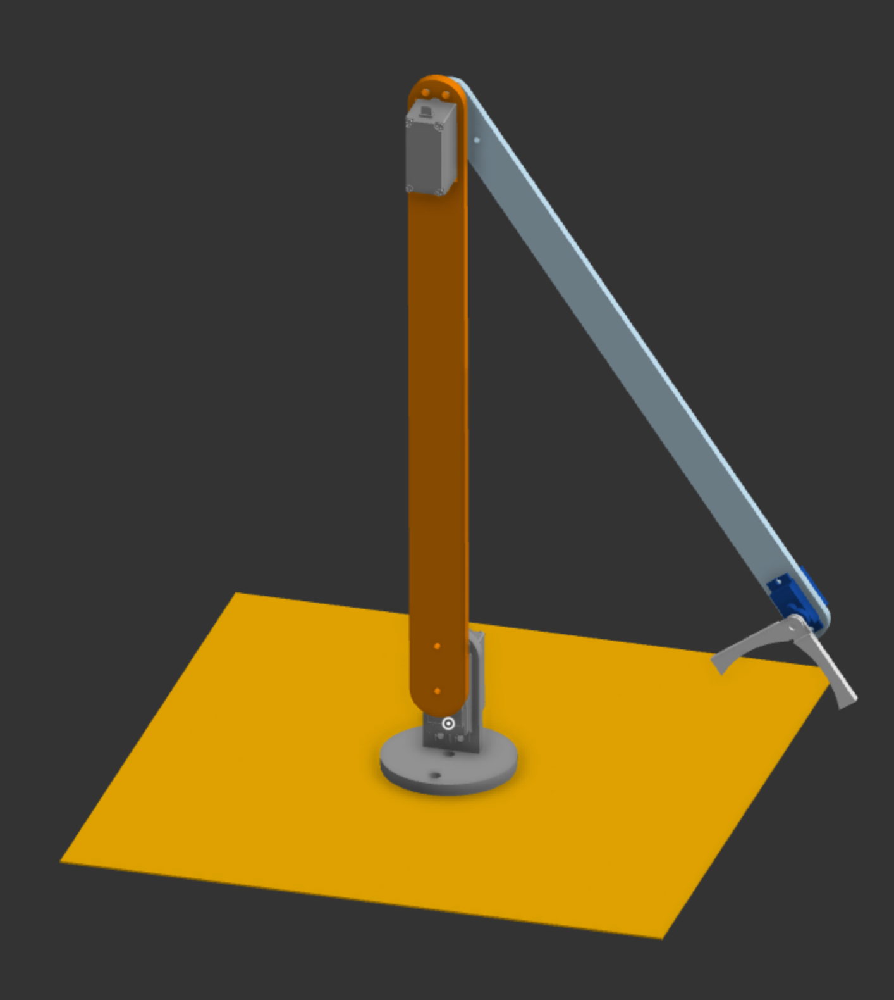

Sauer Rot is an epic "robot arm" project for picking up เสาวรส
Sauer Rot, developed by Yontuh, Liam, and Max, is a very cool robot arm. With grabbing range of aprox. 2.1ft and controlled by an Arduino Uno R3. Once complete, it will be able to pick up lots of เสาวรส using the cool claw, which is designed by Liam (who is cool), and lots of servos. After the project is more developed, the team is planning to migrate to a RaspberryPi Zero 2W for higher computing power and reduced electronics cost.
The Specs:
- 20kg servos for main joints and motion
- 9g servos for claw and wrist articulation
- Arduino Uno R3 controller, with plans to upgrade to a RaspberryPi Zero 2W
- 65cm arm grabbing range (25.5" freedom units) with 360 degree rotation
Design:
The Sauer Rot project is designed using a software called Onshape, a browser based CAD program, the parts are designed separatly and combined into a final assembly using the software. The parts are linked together using movable linkages called "mates" which can simulate the motion of the Sauer Rot arm.
 